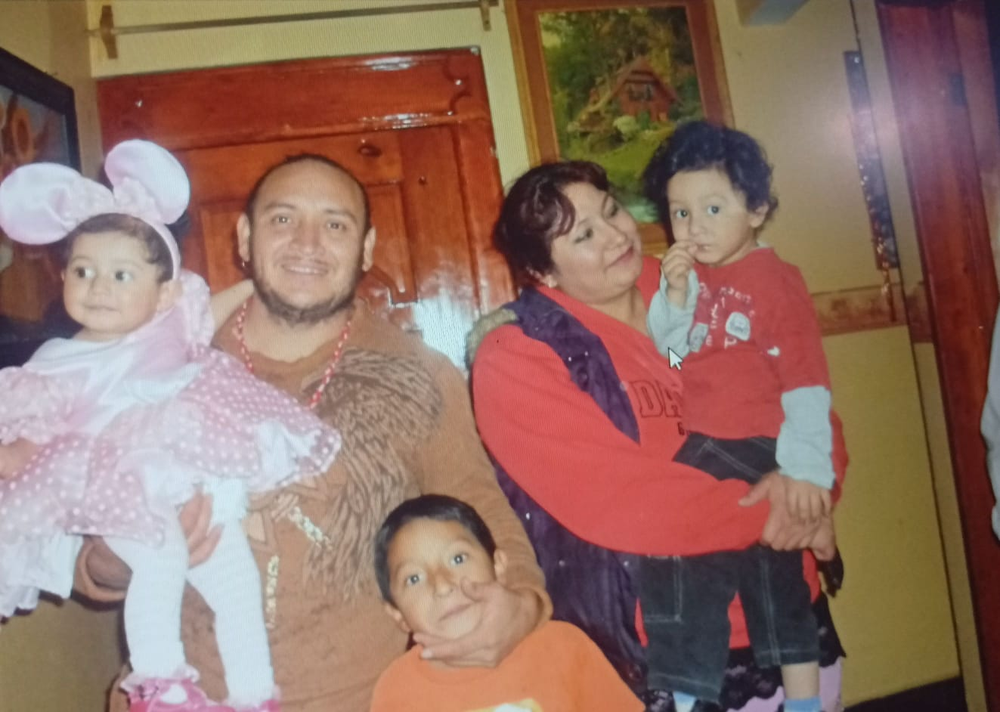
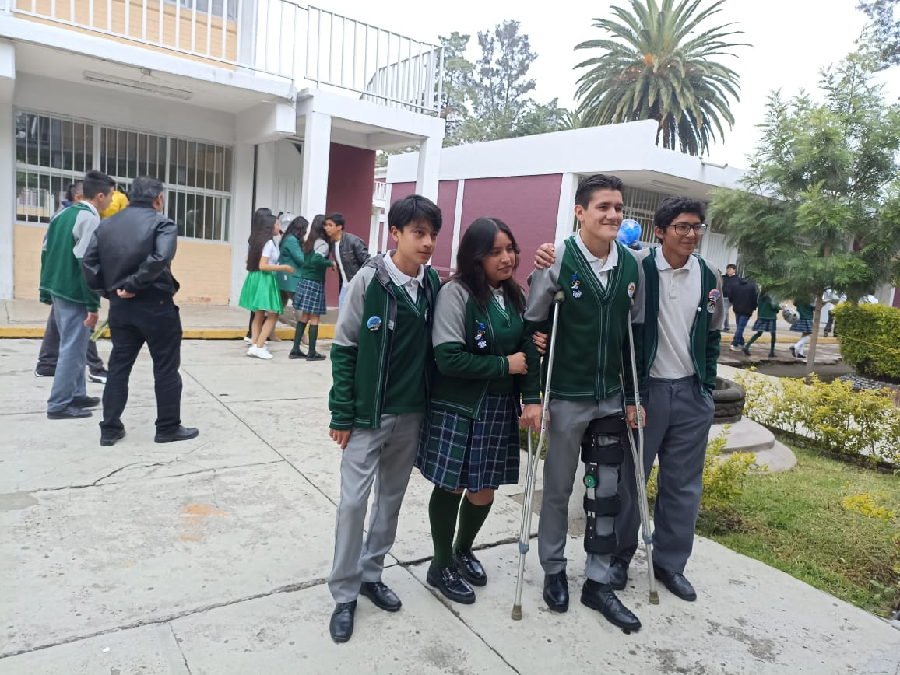
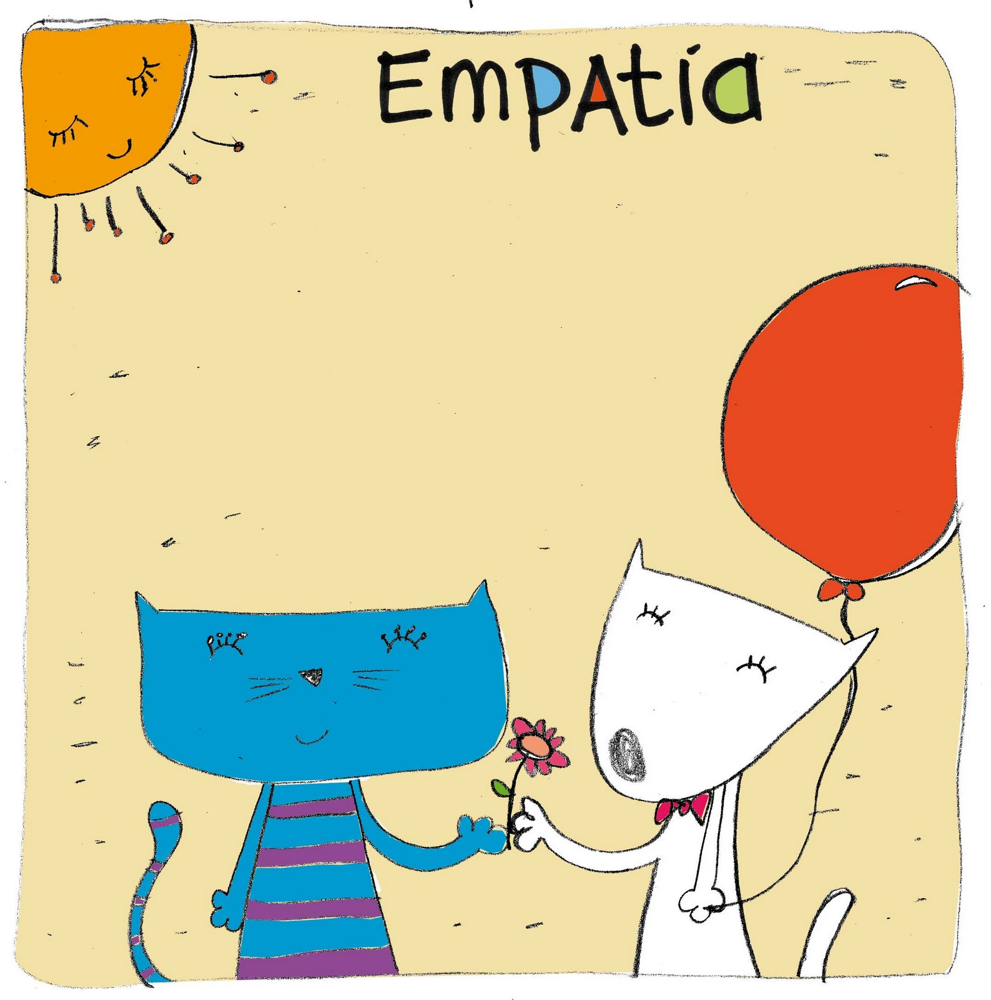

Sobre mi familiaVivo con mis padres y mis dos hermanos, un hombre y una mujer, quienes forman una parte muy importante de mi vida y me apoyan en mis metas y proyectos. Además, tengo dos mascotas muy importantes para mí: un perro grande llamado Brandy y un perro pequeño llamado Milaneso. Ambos forman parte de mi familia y me acompañan en muchos momentos de mi vida. |
 |
Sobre mis amigosPara mí, convivir con mis amigos es una de las actividades más importantes en mis tiempos libres. Me gusta compartir con ellos, mantener una buena convivencia y aprender de las experiencias que pasamos juntos en la escuela y fuera de ella. |
 |
Mis valores y cualidadesEntre mis principales cualidades destacan la paciencia, la empatía y la tolerancia, ya que me gusta comprender a las demás personas y mantener una buena convivencia con quienes me rodean. Sin embargo, reconozco que tengo aspectos personales que debo mejorar día con día, como lo son trabajar para ser menos flojo, controlar de mejor manera mi hiperactividad y ser más ordenado en el desarrollo de mis actividades diarias. |
 |
Mis aspiraciones futurasUna de mis principales aspiraciones es estudiar Ingeniería Automotriz, ya que me interesa mucho el funcionamiento de los automóviles y la tecnología relacionada con ellos. También me llaman fuertemente la atención áreas como la Contabilidad y la Medicina. Mi objetivo principal a largo plazo es terminar correctamente mis estudios actuales, lograr ingresar exitosamente al nivel superior y conseguir un empleo estable que me permita crecer profesionalmente y cumplir cada una de mis metas personales. |